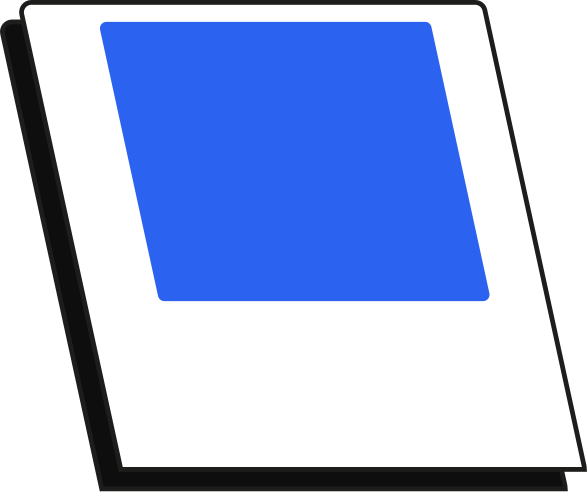

Ajuda
Usuário
Começando pela parte do usuário, você pode configurar sua conta da forma como quiser e até alterar o tipo dela, selecionando uma conta para padrão (artista) ou empresa.
Portfólio
Na parte de portfólio, além de você poder atualizar o seu indo na seção de portfólio e adicionando ou editando, também dá para acessar projetos de outras pessoas de duas formas.
Uma delas é indo em “Explorar”, que utiliza um algoritmo para sugerir portfólios que talvez você tenha interesse; a outra é pela barra de pesquisa, buscando por um estilo e filtrando o resultado após a pesquisa.
Ao clicar na capa do portfólio, ele abrirá uma tela mais detalhada onde estará o portfólio completo.

Cadastro
Na página de entrar/cadastro, você utiliza seu e-mail e uma senha de preferência para acessar o site. Se preferir, também é possível clicar na seta no canto superior direito para entrar como anônimo.